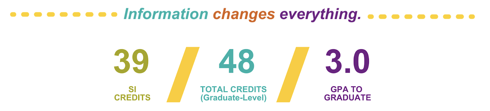

Academic Advising is a process where students envision, execute, and reflect on their academic plans with guidance from a qualified UMSI Academic Advisor. Students share their goals, challenges, and questions with their academic advisor, and their academic advisor contributes knowledge of university and program requirements, policies, and processes. Together, we develop an academic plan that aligns with the student's personal and professional goals.

To earn a Master of Science in Information at the School of Information, you must complete a minimum of 48 credit hours of graduate coursework, with a minimum grade average of B (3.0 minimum cumulative GPA required), including required coursework.
How to use Course Planning Worksheets
Make a copy of the Course Planning Sheet that corresponds to your chosen pathway (linked above) in your own Google Drive
Select the correct plan at the bottom in the tabs available
Add in any "Course Waivers" that you have earned in the "Waivers & Exemptions Relevant to MSI Requirements" section
Plot out the rest of your coursework during your time at UMSI.
Have questions or want your plan reviewed? Email your plan to the MSI Academic Advising team.
Student Support
There are also resources that may help you in many areas of your academic life. Knowing how to utilize them can be significant for your academic success.
How to Use Student Support Resources
UMSI Tutoring Website: Book tutoring sessions online or request help via the Tutor Intake Form for unsupported courses.
Online Python Resources: Start with free tools like "Python for Everybody" or interactive platforms like Codecademy for hands-on learning.
Sweetland Writing Center: Schedule consultations online for writing feedback or submit work for asynchronous review.
English Language Institute: Enroll in workshops or clinics to improve academic English skills and cultural adaptation.
University of Michigan Library: Search and borrow materials online, access research guides, or request interlibrary loans.
UMSI Laptop Specification: Ensure your laptop meets program requirements; upgrade specs if needed for better performance.
Services for Students with Disabilities: Register early, request accommodations through SSD's portal, and use mentoring or assistive tools.